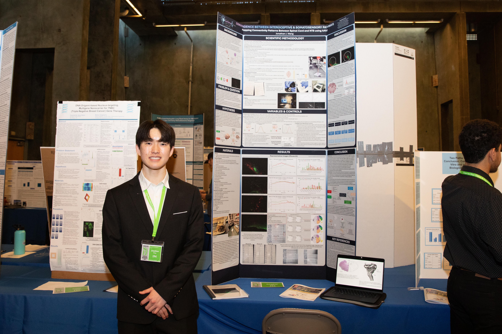

What it is
Project Second Voice brings together digital storytelling, memory, and advocacy to preserve lived experiences that are often overlooked. It is designed as a platform where immigrant voices can be shared with care, context, and dignity.
About Project Second Voice
Project Second Voice is a youth-led digital storytelling platform that documents immigrant experiences and creates space for those stories to be heard in full humanity.
Project Second Voice brings together digital storytelling, memory, and advocacy to preserve lived experiences that are often overlooked. It is designed as a platform where immigrant voices can be shared with care, context, and dignity.
Too often, conversations about immigration flatten people into numbers, policies, or soundbites. This initiative began from the belief that stories can restore depth, individuality, and empathy to those conversations.
The mission is to ensure immigrant experiences are preserved and amplified through thoughtful digital media, building understanding across communities while creating a lasting archive of voices that matter.
As a youth-led platform, Project Second Voice reflects a generation committed to listening closely, documenting honestly, and using digital storytelling as a tool for connection, recognition, and social empathy.
Founder
My name is Jonathan Wang, and I am an 11th grader at Del Norte High School and the founder of Project Second Voice. As the child of first-generation Chinese immigrants, I created this platform out of a desire to preserve stories that deserve more care, attention, and humanity.
I was especially inspired to take initiative after the Los Angeles raids that occurred last summer, and by the responsibility I felt living in a community shaped by many diverse immigrant cultures. Project Second Voice reflects that urgency alongside the love I have for my own Chinese culture.
The founder vision behind the platform is simple: immigrant experiences should be documented with dignity, shared with intention, and remembered as fully human stories.
